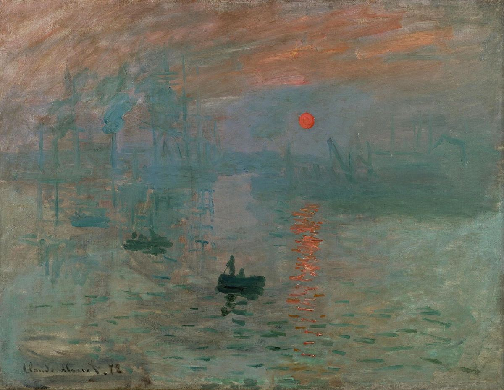

Impression, Sunrise

Palette
- Dim gray · your word: Taupe
- Hooker's green · your word: Hunter green
- Nickel · your word: Slate
- Battleship grey · your word: Viridian
- Taupe · your word: Taupe
- Sepia · your word: Sepia
Monet painted the port of Le Havre from his hotel window in November 1872; an astronomer later used the sun and tides to pin it to 13 November, around 7:35 a.m. Shown in 1874, it gave Impressionism its name. Neuroscientist Margaret Livingstone points out that the orange sun is about as light as the grey sky around it, a matter of value: in a black-and-white copy it nearly disappears.
Image
Wikimedia Commons · Public domain

Hex values are screen approximations. Every page lists its sources.